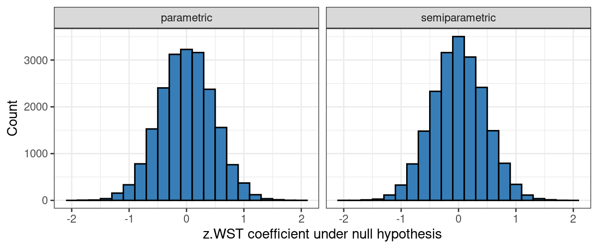

A few examples of bootstrapping
bootstrapping
R
This post illustrates a statistical technique that becomes particularly useful when you want to calculate the sampling variation of some custom statistic when you start to dabble in mixed-effects models. This technique is called bootstrapping and I will first illustrate its use in constructing confidence intervals around a custom summary statistic. Then I’ll illustrate three bootstrapping approaches when constructing confidence intervals around a regression coefficient, and finally, I will show how bootstrapping can be used to compute p-values.
The goal of this post is not to argue that bootstrapping is superior to the traditional alternatives—in the examples discussed, they are pretty much on par—but merely to illustrate how it works. The main advantage of bootstrapping, as I understand it, is that it can be applied in situation where the traditional alternatives are not available, where you don’t understand how to use them or where their assumptions are questionable, but I think it’s instructive to see how its results compare to those of traditional approaches where both can readily be applied.
Those interested can download the R code for this post.
A confidence interval around an asymmetrically trimmed mean
The histogram below shows how well 159 participants performed on a L1 German vocabulary test (WST). While the distribution is clearly left-skewed, we still want to characterise its central tendency. Let’s say, for the sake of this example, that we decide to calculate the sample mean, but we want to disregard the lowest 10% of scores. For this sample, this yields a value of 32.7.
Easy enough, but let’s say we want to express the sampling variation of this number (32.7) using an 80% confidence interval? Constructing confidence intervals around regular means can be done using the appropriate t-distribution, but we may not feel comfortable applying this approach to a mean based on the top 90% of the data only or we may not be sure how many degrees of freedom the t-distribution should have (158 or 142?). (In practice, this won’t make much of a difference, but verifying this would be reassuring.)
One possible solution is to proceed as follows. We take the sample that we actually observed (the green histogram below) and use it to create a new sample with the same number of observations (in this case: 159). We do this by taking a random observation from the original dataset, jotting down its value, putting it back in the dataset, sampling again etc., until we have the number of observations required (resampling with replacement). This new sample will be fairly similar in shape to our original sample, but won’t be identical to it (the purple histogram below): Some values will occur more often than in the original sample, others less often, and some may not occur at all in the new sample. We then compute the statistic of interest for the new sample (here: the mean after disregarding the lowest 10% of observations; the dashed red line) and jot down its value. We can do this, say, 20,000 times to see to what extent the trimmed means vary in the new, randomly created samples (blue histogram below).
Update (2023-08-08): I reran the code with 20,000 bootstrap runs; in the original blog post, I only used 1,000 bootstrap runs.
To construct a 80% confidence interval around the asymmetrically trimmed mean of 32.7, we can sort the values in the blue histogram from low to high and look up the values that demarcate the middle 80% (roughly 31.9 and 33.6).
The technique used above—generating new samples based on the observed data to assess how much a statistic varies in similar but different samples—is known as bootstrapping. It is particularly useful when you want to gauge the variability of a sample statistic
- when you don’t have an analytic means of doing so (e.g., based on a theoretical distribution such as the t-distribution for sample means)
- or if you fear that the assumptions behind the analytic approach may be violated to such an extent that it may not provide good enough approximations.
While I’ve described how bootstrapping works, it’s less easy to see why it works. To assess the sampling variation of a given sample statistic, we would ideally have access to the population from which the sample at hand was drawn. Needless to say, we rarely have this luxury, and the sample at hand typically represents our best guess of how the population might look like, so we use our sample as a stand-in for the population.
Perhaps you feel that it requires too big a leap of faith to use the sample we have as a stand-in for the population. After all, by chance, the sample we have may poorly reflect the population from which it was drawn. I think this is a reasonable concern, but rather than to alleviate it, I will just point out that analytical approaches operate on similar assumptions: t-values, for instance, use the sample standard deviations as stand-ins for the population standard deviations, and their use in smaller samples is predicated on the fiction that the samples were drawn from normal distributions. Assumptions, then, are needed to get a handle on inferential problems, whether you choose to solve them analytically, using bootstrapping or by another means.
A confidence interval for a regression coefficient: Non-parametric, parametric and semi-parametric bootstrapping
The procedure outlined in the example above is only one kind of bootstrapping. While it’s usually just called ‘bootstrapping’, it is sometimes called non-parametric bootstrapping to distinguish it from two other flavours of bootstrapping: parametric bootstrapping and semi-parametric bootstrapping. In this section, I will briefly explain the difference between these three techniques using a regression example.
We have a dataset with 159 observations of four variables, whose intercorrelations are outlined below. The outcome variable is TotCorrect; the other three variables serve as predictors.
After standardising the three predictors, we fit a multiple regression model on these data, which yields the following estimated coefficients:
Estimate
(Intercept) 16.50
z.WST 1.15
z.Raven 1.89
z.English.Cloze 1.60To express the variabilitity of z.WST’s coefficient, we want to construct a 90% confidence interval around it. We could use the regression model’s output to construct a 90% confidence interval using the appropriate t-distribution, but for the sake of the argument, let’s pretend that option is off the table.
Non-parametric bootstrap
For the non-parametric bootstrap, we do essentially the same as in the previous example, but rather than computing the trimmed means for 20,000 new samples, we fit a regression model on them and jot down the estimated coefficient for z.WST.
- Resample 159 rows with replacement from the original dataset.
- Fit the multiple regression model on the new dataset.
- Jot down the estimated coefficient for
z.WST. - Perform steps 1–3 20,000 times.
(The results are shown further down.)
Parametric bootstrap
The regression model above is really just an equation:
\[ \textrm{TotCorrect}_i = 16.50 + 1.15\times \textrm{z.WST}_i + 1.89\times\textrm{z.Raven}_i+1.60\times\textrm{z.English.Cloze}_i + \textrm{random error}_i, \]
where the random errors are assumed to be normally distributed around 0 with a standard deviation that is estimated from the data.
Instead of randomly resampling cases from the original dataset, we could use this regression equation to generate new outcome values. Due to the random error term, new simulated samples will differ from each other. We can then refit the regression model on the new values to see how much the estimated coefficients vary.
- Simulate 159 new outcome values on the basis of the regression model (prediction + random error from normal distribution) and the original predictors.
- Fit the multiple regression model on the new outcome values using the old predictors.
- Jot down the estimated coefficient for
z.WST. - Perform steps 1–3 20,000 times.
This approach is called parametric bootstrapping because it relies on the original model’s estimated regression coefficients (parameters), its error term estimate as well as the assumption that the errors are drawn from a normal distribution.
Semi-parametric bootstrap
As its name suggests, the semi-parametric bootstrap is a compromise between the non-parametric and the parametric bootstrap. The new outcome values are partly based on the original regression model, but instead of drawing the errors randomly from a normal distribution, the original model’s errors are resampled with replacement and added to the model’s predictions.
- Extract the residuals (errors) from the original regression model.
- Predict 159 new outcome values on the basis of the regression model (prediction only) and the original predictors.
- Resample 159 values with replacement from the errors extracted in step 1 and add these to the predictions from step 2.
- Fit the multiple regression model on the new outcome values (prediction + resampled errors) using the old predictors.
- Jot down the estimated coefficient for
z.WST. - Perform steps 3–5 20,000 times.
This approach is called semi-parametric bootstrapping because, while it relies on the original model’s estimated regression coefficients, the error distribution is assumed to be normal but is instead approximated by sampling from the original model’s errors.
Results
The histograms below show the sampling variability of the estimated z.WST coefficient according to each method.
To construct 90% confidence intervals, we pick the 5th and 95th percentiles of the bootstrapped estimates. The resulting intervals are plotted below alongside the 90% confidence interval constructed from the model summary. In this case, the confidence interval obtained by nonparametric bootstrapping is a bit wider.
Testing null hypotheses using bootstrapping
Another use for parametric and semi-parametric bootstrapping is to compute p-values if they can’t be computed analytically or if the assumptions of the analytical approach aren’t adequately met. The basic logic is the same in either case: You generate a large number of datasets in which you know the null hypothesis (e.g., ‘no difference’ or ‘the coefficient is 0’ or perhaps even ‘the difference/coefficient is 0.3’) to be true. You then compute whichever statistic you’re interested in for all of these new datasets and you calculate the proportion of cases where the statistic in the new datasets exceeds the statistic in your original sample. This proportion is a p-value as it expresses the (approximate) probability of observing a sample statistic of at least this magnitude if the null hypothesis is actually true.
(Example for more advanced users: Likelihood ratio tests used for comparing nested mixed effects models are based on the assumption that likelihood ratios follow a \(\chi^2\) distribution if the null hypothesis is true. This is a good enough assumption for large samples, but when you’re fitting mixed effects models, it isn’t always clear exactly what a large sample is. When in doubt, you can resort to bootstrapping in such cases: You generate new datasets in which the null hypothesis is true and compute likelihood ratios for them. These likelihood ratios then serve as distribution of likelihood ratios under the null hypothesis against which you can then compare the likelihood ratio computed for your original dataset.)
For illustrative purposes, we’re going to compute the p-value for the estimated z.WST coefficient from the previous example using parametric and semi-parametric bootstrapping, although there are no reasons to suspect that the t-distribution-based p-value in the model output (0.012) is completely off. As such, we’d expect the three methods to yield similar results. For both the parametric and semi-parametric bootstraps, we need to generate datasets in which we know the null hypothesis to be true (i.e., the coefficient for z.WST = 0). This we do by first fitting a null model to the data, that is, a model that is similar to the full model we want to fit but without the z.WST term we want to compute the p-value for. Then we generate new datasets on the basis of this null model. This guarantees that the null hypothesis is actually true in all newly generated samples, so that the distribution of the estimated z.WST coefficients for the newly generated samples can serve as an approximation of the estimated z.WST coefficient’s distribution under the null hypothesis.
The steps for computing p-values using a parametric and semi-parametric bootstrap are pretty similar; the only real difference is whether we’re more comfortable assuming that the residuals are drawn from a normal distribution or that their distribution is similar to that of the null model’s residuals.
Parametric bootstrapping
- Fit a null model, i.e., a model without whichever term you want to compute the p-value for (here:
z.WST). - Simulate 159 new outcome values on the basis of the null model (prediction + random error from normal distribution) and the predictors in the null model.
- Fit the full multiple regression model, i.e., with the term we want to compute the p-value for, on the new outcome values using the old predictors.
- Jot down the esetimated coefficient for
z.WST. - Perform steps 2–4 20,000 times.
- See how often the estimated
z.WSTcoefficients in the 20,000 samples generated under the null hypothesis are larger in magnitude than the estimatedz.WSTcoefficient in the original sample. This is the p-value.
(Results below.)
Semi-parametric bootstrapping
- Fit a null model, i.e., a model without whichever term you want to compute the p-value for (here:
z.WST). - Extract the null model’s residuals (errors).
- Predict 159 new outcome values on the basis of the null model (prediction only) and the predictors in the null model.
- Resample 159 values with replacement from the errors extracted in step 2 and add these to the predictions from step 3.
- Fit the full multiple regression model, i.e., with the term we want to compute the p-value for, on the new outcome values (prediction + resampled error) using the old predictors.
- Jot down the estimated coefficient for
z.WST. - Perform steps 4–6 20,000 times.
- See how often the estimated
z.WSTcoefficients in the 20,000 samples generated under the null hypothesis are larger in magnitude than the estimatedz.WSTcoefficient in the original sample. This is the p-value.
Results
The distribution of the z.WST looks pretty similar whether we use parametric or semi-parametric bootstrapping.

The p-value obtained by parametric bootstrapping is 0.0146 (i.e., 291 out of 20,000 estimated z.WST coefficients have absolute values larger than 1.15), the one obtained by semi-parametric bootstrapping is 0.0122, whereas the t-distribution-based p-value was 0.012. As expected, then, there is hardly any difference between them. The bootstrapped p-values are themselves subject to random variation, and different runs of the bootstrap will produce slightly different results. We could increase the number of bootstrap runs for greater accuracy, but I don’t think this is really necessary here.
Concluding remarks
My goal was to illustrate how bootstrapping works rather than to discuss at length when to use which approach. Indeed, in the regression example above, the results of the bootstraps hardly differ from the t-distribution-based results, so the choice of method doesn’t really matter much.
That said, bootstrapping is a technique that’s useful to at least know about as it comes in handy if you want to estimate the sampling variation of a summary statistic in some funky distribution or if you want to verify, say, a likelihood ratio test for nested mixed-effects models.
Software versions
devtools::session_info()─ Session info ───────────────────────────────────────────────────────────────
setting value
version R version 4.3.1 (2023-06-16)
os Ubuntu 22.04.3 LTS
system x86_64, linux-gnu
ui X11
language en_US
collate en_US.UTF-8
ctype en_US.UTF-8
tz Europe/Zurich
date 2023-08-27
pandoc 3.1.1 @ /usr/lib/rstudio/resources/app/bin/quarto/bin/tools/ (via rmarkdown)
─ Packages ───────────────────────────────────────────────────────────────────
package * version date (UTC) lib source
cachem 1.0.6 2021-08-19 [2] CRAN (R 4.2.0)
callr 3.7.3 2022-11-02 [1] CRAN (R 4.3.1)
cli 3.6.1 2023-03-23 [1] CRAN (R 4.3.0)
colorspace 2.1-0 2023-01-23 [1] CRAN (R 4.3.0)
crayon 1.5.2 2022-09-29 [1] CRAN (R 4.3.1)
devtools 2.4.5 2022-10-11 [1] CRAN (R 4.3.1)
digest 0.6.29 2021-12-01 [2] CRAN (R 4.2.0)
dplyr * 1.1.2 2023-04-20 [1] CRAN (R 4.3.0)
ellipsis 0.3.2 2021-04-29 [2] CRAN (R 4.2.0)
evaluate 0.15 2022-02-18 [2] CRAN (R 4.2.0)
fansi 1.0.4 2023-01-22 [1] CRAN (R 4.3.1)
farver 2.1.1 2022-07-06 [1] CRAN (R 4.3.0)
fastmap 1.1.0 2021-01-25 [2] CRAN (R 4.2.0)
forcats * 1.0.0 2023-01-29 [1] CRAN (R 4.3.0)
fs 1.5.2 2021-12-08 [2] CRAN (R 4.2.0)
generics 0.1.3 2022-07-05 [1] CRAN (R 4.3.0)
ggplot2 * 3.4.2 2023-04-03 [1] CRAN (R 4.3.0)
glue 1.6.2 2022-02-24 [2] CRAN (R 4.2.0)
gridExtra 2.3 2017-09-09 [1] CRAN (R 4.3.0)
gtable 0.3.3 2023-03-21 [1] CRAN (R 4.3.0)
hms 1.1.3 2023-03-21 [1] CRAN (R 4.3.0)
htmltools 0.5.5 2023-03-23 [1] CRAN (R 4.3.0)
htmlwidgets 1.6.2 2023-03-17 [1] CRAN (R 4.3.1)
httpuv 1.6.11 2023-05-11 [1] CRAN (R 4.3.1)
jsonlite 1.8.7 2023-06-29 [1] CRAN (R 4.3.1)
knitr 1.39 2022-04-26 [2] CRAN (R 4.2.0)
labeling 0.4.2 2020-10-20 [1] CRAN (R 4.3.0)
later 1.3.1 2023-05-02 [1] CRAN (R 4.3.1)
lifecycle 1.0.3 2022-10-07 [1] CRAN (R 4.3.0)
lubridate * 1.9.2 2023-02-10 [1] CRAN (R 4.3.0)
magrittr * 2.0.3 2022-03-30 [1] CRAN (R 4.3.0)
memoise 2.0.1 2021-11-26 [2] CRAN (R 4.2.0)
mime 0.10 2021-02-13 [2] CRAN (R 4.0.2)
miniUI 0.1.1.1 2018-05-18 [1] CRAN (R 4.3.1)
munsell 0.5.0 2018-06-12 [1] CRAN (R 4.3.0)
pillar 1.9.0 2023-03-22 [1] CRAN (R 4.3.0)
pkgbuild 1.4.2 2023-06-26 [1] CRAN (R 4.3.1)
pkgconfig 2.0.3 2019-09-22 [2] CRAN (R 4.2.0)
pkgload 1.3.2.1 2023-07-08 [1] CRAN (R 4.3.1)
prettyunits 1.1.1 2020-01-24 [2] CRAN (R 4.2.0)
processx 3.8.2 2023-06-30 [1] CRAN (R 4.3.1)
profvis 0.3.8 2023-05-02 [1] CRAN (R 4.3.1)
promises 1.2.0.1 2021-02-11 [1] CRAN (R 4.3.1)
ps 1.7.5 2023-04-18 [1] CRAN (R 4.3.1)
purrr * 1.0.1 2023-01-10 [1] CRAN (R 4.3.0)
R6 2.5.1 2021-08-19 [2] CRAN (R 4.2.0)
RColorBrewer * 1.1-3 2022-04-03 [1] CRAN (R 4.3.0)
Rcpp 1.0.11 2023-07-06 [1] CRAN (R 4.3.1)
readr * 2.1.4 2023-02-10 [1] CRAN (R 4.3.0)
remotes 2.4.2 2021-11-30 [2] CRAN (R 4.2.0)
rlang 1.1.1 2023-04-28 [1] CRAN (R 4.3.0)
rmarkdown 2.21 2023-03-26 [1] CRAN (R 4.3.0)
rstudioapi 0.14 2022-08-22 [1] CRAN (R 4.3.0)
scales 1.2.1 2022-08-20 [1] CRAN (R 4.3.0)
sessioninfo 1.2.2 2021-12-06 [2] CRAN (R 4.2.0)
shiny 1.7.4.1 2023-07-06 [1] CRAN (R 4.3.1)
stringi 1.7.12 2023-01-11 [1] CRAN (R 4.3.1)
stringr * 1.5.0 2022-12-02 [1] CRAN (R 4.3.0)
tibble * 3.2.1 2023-03-20 [1] CRAN (R 4.3.0)
tidyr * 1.3.0 2023-01-24 [1] CRAN (R 4.3.0)
tidyselect 1.2.0 2022-10-10 [1] CRAN (R 4.3.0)
tidyverse * 2.0.0 2023-02-22 [1] CRAN (R 4.3.1)
timechange 0.2.0 2023-01-11 [1] CRAN (R 4.3.0)
tzdb 0.4.0 2023-05-12 [1] CRAN (R 4.3.0)
urlchecker 1.0.1 2021-11-30 [1] CRAN (R 4.3.1)
usethis 2.2.2 2023-07-06 [1] CRAN (R 4.3.1)
utf8 1.2.3 2023-01-31 [1] CRAN (R 4.3.1)
vctrs 0.6.3 2023-06-14 [1] CRAN (R 4.3.0)
withr 2.5.0 2022-03-03 [2] CRAN (R 4.2.0)
xfun 0.39 2023-04-20 [1] CRAN (R 4.3.0)
xtable 1.8-4 2019-04-21 [1] CRAN (R 4.3.1)
yaml 2.3.5 2022-02-21 [2] CRAN (R 4.2.0)
[1] /home/jan/R/x86_64-pc-linux-gnu-library/4.3
[2] /usr/local/lib/R/site-library
[3] /usr/lib/R/site-library
[4] /usr/lib/R/library
──────────────────────────────────────────────────────────────────────────────